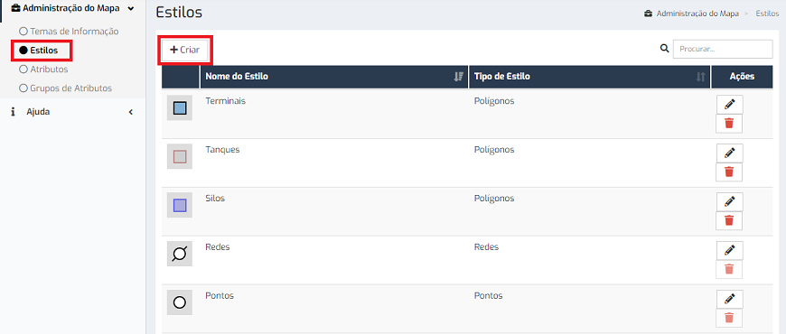
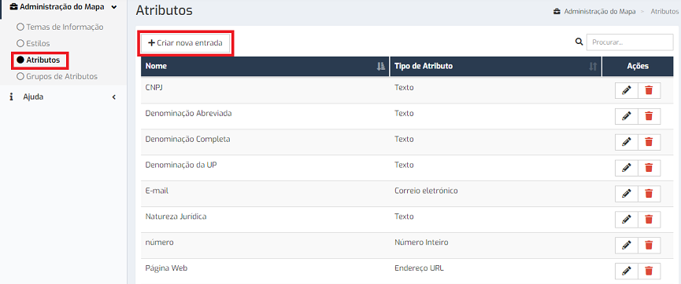
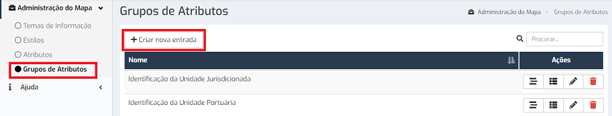
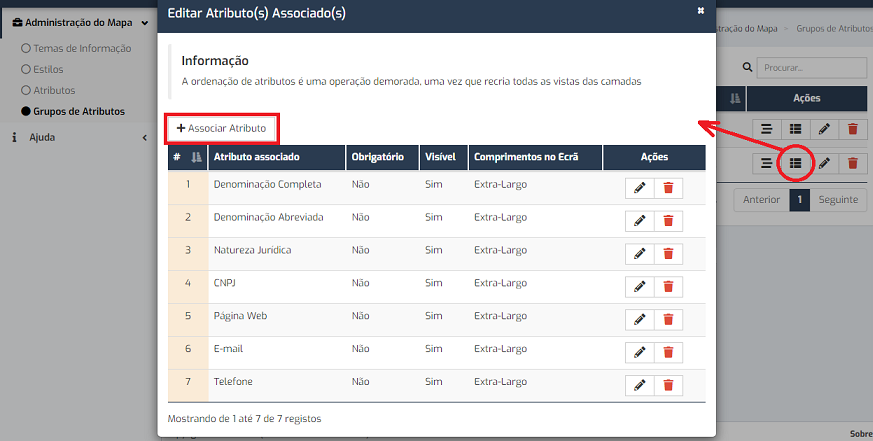
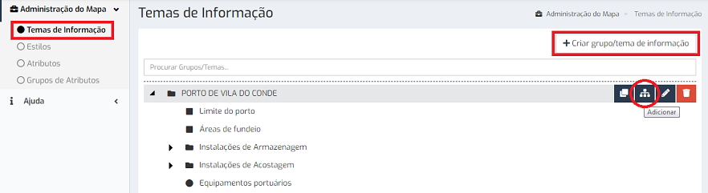

FAQs
A criação de temas de informação pressupõe a criação do estilo e dos atributos que melhor ajudam a caracterizar os elementos do tema. Os atributos têm de ser organizados em grupos de atributos.
Por omissão, cada tema dispõe dos seguintes grupos de atributos:
Para além destes, é possível criar e associar grupos de atributos específicos.
A aplicação dispõe de um conjunto de estilos pré-definido para os diferentes tipos de geometrias. No entanto, permite a criação de novos na janela "Estilos", através do botão “Criar”.

A criação dos estilos pode ser efetuada manualmente pelo utilizador ou através de importação de ficheiros SLD. O upload dos ficheiros é efetuado na parte inferior da janela.
A criação de atributos é efetuada na janela "Atributos", através do botão “Criar nova entrada”.

Os atributos podem ser de diferentes tipos:
Os atributos associados aos temas são estruturados por grupos. A criação de grupos de atributos é efetuada na janela "Grupo de Atributos", através do botão “Criar nova entrada”.

Após criar os grupos, é necessário associar os atributos que os constituem, através do botão “Associar atributo”.

Após a criação do estilo, dos atributos e dos grupos de atributos é possível criar os temas, na janela "Temas de Informação", através do botão “Criar Grupo/tema de informação” ou do botão "Adicionar", caso se pretenda criar um tema dentro de um grupo já existente.

Os temas são estruturadas em árvore, podendo pertencer a um grupo, subgrupo ou surgir diretamente na raiz.
Este documento foi gerado pelo HelpMaker Light — Copyright © Hypervisual 2008-2017.